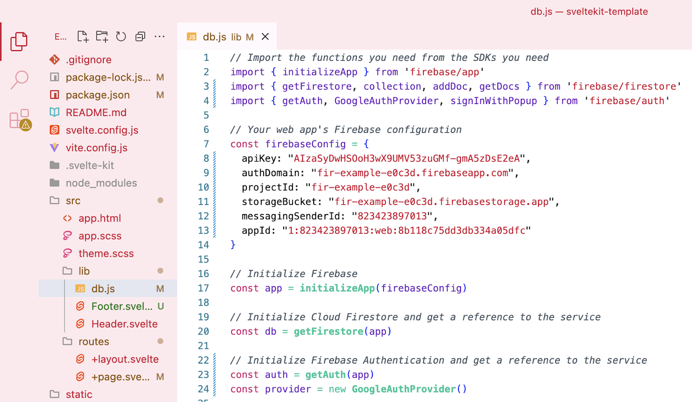

What you'll build
- A database to store objects from your existing web app.
What you'll learn
- What a database is and does.
- How to create and set up a Firebase database.
- How to connect your web app to the database.
What you'll need
- Knowledge of HTML, CSS, JavaScript, and Svelte.
- A web app with some data that needs to be stored.
Firebase includes a feature called Authentication. This allows you to use Google logins in your app, and offloads all of the complexity and issues of user management and security to Google.
The next few steps are based on Firebase's Authentication documentation, but simplified for our use.
- Click on the Authentication card (or click on the Build menu dropdown and select Authentication).
- Click Get started to enable authentication for this project.
- Choose the Google sign-in method and then toggle enable.
- Use your email address as the support email address.
- Click Save and Google authentication has been enabled on your app.
- Add three imports from firebase/auth to your db.js file for the services you need:
- getAuth
- GoogleAuthProvider
- signInWithPopup
- Create two constants to initialize the authentication services:
- auth for the getAuth
- provider for the GoogleAuthProvider

- Create a new function at the bottom of your db.js file called login. This function will use the signInWithPopup function to let the user authenticate with their Google login and then it'll log the result to the console so you can see if it's working.
// Signs in a user with Google authentication.
export async function login() {
const result = await signInWithPopup(auth, provider)
console.log('User signed in:', result.user)
}- Include your new login function in your list of imports on the front page.
- Create a button in your main section that calls the login function when it's clicked.
Your app will need to be able to access information across different pages. The user is one example of this kind of information and it's a good opportunity to introduce the idea of state. An app's state is essentially all the important information that your application needs to remember at any given moment while it's running.
It's a bit like the app's short-term memory. This 'memory' can include things like:
- Whether a user is logged in or out.
- What items a user has added to a shopping cart.
- The current score in a game.
When this information (the state) changes – like when your user logs in – the app can react to that change, such as showing them their personalised dashboard.
SvelteKit uses $state as a special kind of variable for this task. When this variable changes, all the components that use it get notified to update themselves to show the new information.
The next steps are based on SvelteKit's Stores and Runes documentation.
- Create a new file in your /lib called state.svelte.js
- Create a new exportable variable named user
- The user variable uses the $state syntax to create a new object with four properties:
- uid
- displayName
- photoURL
- Import your new user variable into your db.js
- Update your login function so that it adds the new user information to the user object.
- You can also delete the console.log now, just to keep everything tidy.
// Signs in a user with Google authentication.
export async function login() {
const result = await signInWithPopup(auth, provider)
console.log('User signed in:', result.user)
user.uid = result.user.uid
user.email = result.user.email
user.displayName = result.user.displayName
user.photoURL = result.user.photoURL
}The logout function is as simple as importing the signOut function and creating a logout function that resets the user variable and calls the signOut function.
// Signs out the current user.
export async function logout() {
user.uid = null
user.email = null
user.displayName = null
user.photoURL = null
await signOut(auth)
}At the moment your front page doesn't react to the user logging in. You can change that by adding an {#if} block that checks if there's a user currently logged in.
If the user variable is null, then the button should offer the user to login.
If the user variable has info in it, then the user is logged in and we can display their information and offer them a logout.
{#if user.uid == null}
<button class="button" on:click={login}>
Login
</button>
{:else}
<p>{user.displayName}</p>
<button class="button" on:click={logout}>
Logout
</button>
{/if}You can personalise the page when the user is logged in by using their display picture and name.
You can create more $state variables in the state.svelte.js file to track other things your app needs to remember between pages, such as the classroom information.
You can change your main page so that it only shows the inputs if the user is logged in. You can also include their uid in the classrooms you store in the database. This would let you get only the classrooms with their uid.